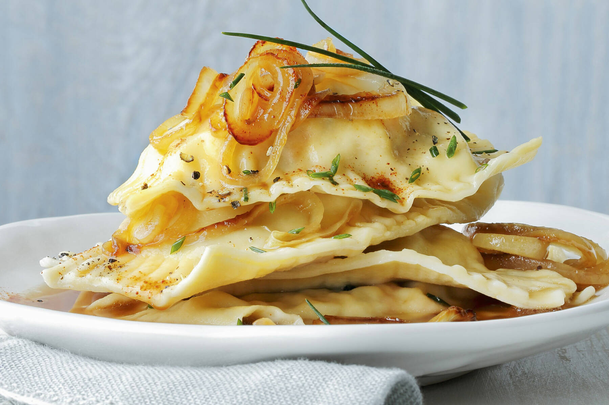

Return home
Maultaschen

Description
A German dish with a long history and a must-try for everyone interested
in German culture!
Ingredients
- 400g flour
- 125ml water
- 1 tbsp. vinegar
- 5 tbsp. oil
- 400g spinach
- 1 onion
- 1.5 buns
- 200g ground meat
- 200g sausage
- 1 tbsp. parsley
- 2 eggs
- 1.5l meat broth
- 1 tbsp. chives
Steps
-
Mix the flour, 1 tsp. salt, water, vinegar and oil and knead it into a
dough
-
Let it rest for 20 min and proceed with the next steps for the filling
- Cook the spinach for 3 minutes
- Cut the onion into small pieces
- Soak the buns in cold water
- Chop the spinach into small pieces
-
Dry the buns and mix with ground meat, sausage, onion, parsley, spinach,
eggs, salt and pepper
-
Spread the dough from the first step and cut into 15cm big squares
- Add one tbsp. of the filling to each square of dough
-
Fold the dough (rectangle or triangle) and press well on the borders
- Make the meat broth boil and add the Maultaschen for 10min
- They are ready when they swim on the surface
- Serve with meat broth and chives